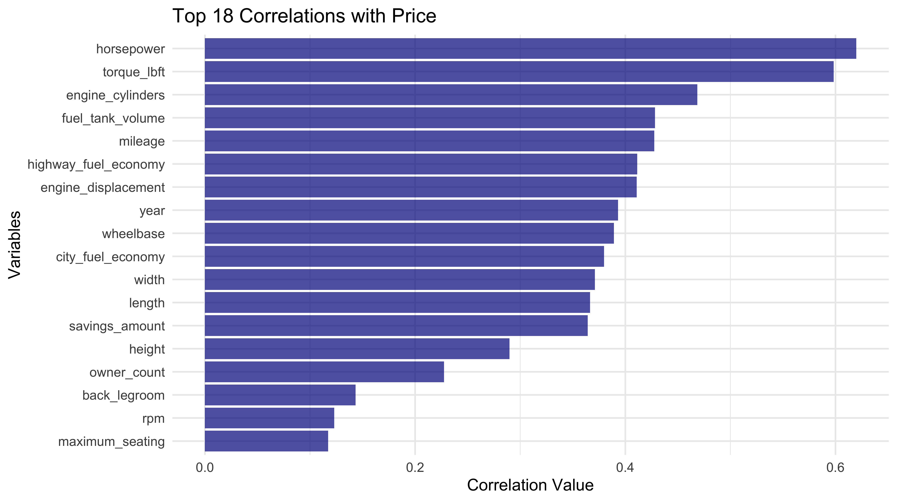
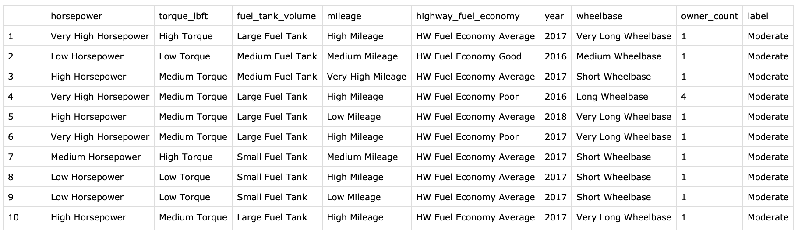

At this stage, the data needs to be processed to apply the Naïve Bayes technique to categorize the price range of vehicles based on vehicle characteristics. Since the original data (initial preprocessing data) consists of more than 600,000 rows, sampling is performed considering the analysis environment and speed, and it is converted to categorical data through the discretization of continuous columns for Naive Bayes analysis.
In total, more than 600,000 data were extracted from the original data as preprocessing work in the initial stage of the project. However, 100,000 data were randomly sampled from the original data to improve computational efficiency by using a smaller amount of data and to facilitate data processing for model development and experimentation. Data sampling utilizes the sample function. It also increases computational efficiency and makes interpretation easier. It can also improve the model's generalization ability by removing unnecessary variables.
The original data contains more than 60 vehicle characteristics. Since all of them can't be used in the analysis, correlation analysis is used to extract the more meaningful features and use them in the analysis. This reduced number of features can eventually reduce the dimensionality of the data, which helps reduce the model's complexity and prevent overfitting. To extract these features, a correlation analysis was performed. And the 18 features that are highly correlated with car prices are shown in the bar plot below.
Only one attribute is extracted among these attributes to avoid duplicating similar attributes. For example, horsepower is an attribute that represents a vehicle's performance similar to engine_cylinder. Therefore, only horsepower is selected from these two attributes. In this way, the following vehicle attributes are finally used for analysis.
Before performing Naive Bayes, the data needs to be converted to categorical data. This means that if continuous numeric variables in the data set need to be analyzed, they need to be converted to categorical data. The benefits of converting to categorical data include maintaining model consistency. If there is a mix of continuous and categorical variables, the model may treat each variable differently, leading to inconsistency. Treating all variables as the same type is critical to keep the model's assumptions consistent. Since the naive Bayes model assumes that all variables are independent, treating them consistently is crucial. Moreover, converting all variables to the same type increases computational efficiency and facilitates the interpretation of the model results later. For this reason, many characteristics in the data, including various numeric data, are converted to categorical variables. Numeric variables are usually discretized using quartiles. However, even though they are numeric variables, non-continuous numeric variables such as year, number of cylinders, etc., are converted directly to categorical variables without discretization. For continuous numeric variables, discretization is performed using the same criteria as discretization in clustering. The table below shows the criteria for continuous numeric variables and discretization categories.
| Column_Name | Category_Names | Break_Values |
|---|---|---|
| highway_fuel_economy | HW Fuel Economy Poor, HW Fuel Economy Average, HW Fuel Economy Good | 12, 24, 31, 75 |
| horsepower | Low Horsepower, Medium Horsepower, High Horsepower, Very High Horsepower | 70, 178, 245, 295, 789 |
| torque_lbft | Low Torque, Medium Torque, High Torque | 68, 184, 267, 811 |
| fuel_tank_volume | Small Fuel Tank, Medium Fuel Tank, Large Fuel Tank | 8.7, 15.9, 19, 38 |
| mileage | Low Mileage, Medium Mileage, High Mileage, Very High Mileage | 0, 22777, 35391, 57683, 399496 |
| wheelbase | Short Wheelbase, Medium Wheelbase, Long Wheelbase, Very Long Wheelbase | 73.5, 106.3, 110.5, 115.5, 164.6 |
The dataframe below is a dataset created after performing the data preprocessing described above.
In supervised learning, the data is split into training and test data to evaluate a model and measure its generalization performance. The training dataset is used to train the model, and the test dataset is used to assess the model's performance. It allows seeing how well the model performs on new data. Suppose a model has been created with one dataset. In that case, it's possible that the model was created by overfitting to one dataset, meaning that it is only suitable for the training data and not applicable to the actual data. To avoid overfitting the training dataset, using the test dataset is required to see if the model generalizes. This step randomly splits the training and test data in a 7:3 ratio. The two images below outline the information in the training data (left) and test data (right).
# Required libraries library(dplyr) library(png) library(grDevices) library(Metrics) library(reshape2) library(ggplot2) library(tidyr) library(knitr) library(kableExtra) library(corrplot) # Load CSV df <- read.csv("used_cars_data_cleaned_final_ver.csv") str(df) # Set seed for reproducibility set.seed(2010) # Number of rows to sample num_rows_to_sample <- 100000 # Randomly sample 100 rows from the scaled_data dataframe df_sampled <- df[sample(nrow(df), num_rows_to_sample, replace = FALSE), ] # store CSV write.csv(df_sampled, "used_cars_data_cleaned_final_ver_nb_sampled.csv") df_sampled <- read.csv("used_cars_data_cleaned_final_ver_nb_sampled.csv", row.names = NULL) df_nb <- df_sampled ###################################################################################################### # Determination of variables through correlation analysis ###################################################################################################### # Select only numeric columns from the dataframe for correlation analysis numeric_df <- df_nb[sapply(df_nb, is.numeric)] # Compute the correlation matrix correlation_matrix <- cor(numeric_df) # Find the most correlated variables with 'price' price_correlation <- correlation_matrix[,'price'] # Sort the correlations in descending order sorted_price_correlation <- sort(abs(price_correlation), decreasing = TRUE) # Extract the top 18 correlations top_15_correlation <- data.frame( variable = names(sorted_price_correlation)[2:19], correlation_value = sorted_price_correlation[2:19] ) png("nb_img008.png", width = 5000, height = 2800, units = "px", pointsize = 12, res = 600) # Create a bar plot using ggplot2 for the top 18 correlations ggplot(top_15_correlation, aes(x = correlation_value, y = reorder(variable, correlation_value))) + geom_bar(stat = "identity", fill = alpha("darkblue", 0.7)) + labs(title = "Top 18 Correlations with Price", x = "Correlation Value", y = "Variables") + theme_minimal() # Save the plot dev.off() # df_nb <- subset(df_sampled, select = c(horsepower, engine_displacement, engine_cylinders, torque_lbft, fuel_tank_volume, mileage, highway_fuel_economy, year, wheelbase, owner_count, has_accidents, price)) df_nb <- subset(df_sampled, select = c(horsepower, torque_lbft, fuel_tank_volume, mileage, highway_fuel_economy, year, wheelbase, owner_count, price)) # Add a new column (category) to the dataframe to convert price into a categorical variable df_nb$label <- cut(df_nb$price, breaks = c(0, 13000, 30000, 10000000), labels = c("Low", "Moderate", "High")) df_nb$label <- as.factor(df_nb$label) # Delete price column df_nb <- df_nb[, -which(names(df_nb) == "price")] df_nb$label # Define the interval to be discretized # breaks <- list( # highway_fuel_economy = c(0, 25, 35, 100), #quantile(df_nb$highway_fuel_economy, probs = c(0, 0.23, 0.66, 1)), # # engine_displacement = quantile(df_nb$engine_displacement, probs = c(0, 0.25, 0.75, 0.95, 1)), # # engine_cylinders = c(0, 3, 5, 8, 12), # horsepower = c(0, 170, 240, 300, 1000), #quantile(df_nb$horsepower, probs = c(0, 0.25, 0.5, 0.75, 1), type = 1), # torque_lbft = c(0, 180, 270, 1000), #quantile(df_nb$torque_lbft, probs = c(0, 0.33, 0.66, 1), type = 1), # fuel_tank_volume = c(0, 15, 20, 100), #quantile(df_nb$fuel_tank_volume, probs = c(0, 0.33, 0.66, 1), type = 1), # mileage = c(-1, 22000, 36000, 60000, 1000000), #quantile(df_nb$mileage, probs = c(0, 0.25, 0.5, 0.75, 1), type = 1), # # year = c(1989, 2014, 2018, 2021), # wheelbase = c(0, 105, 110, 115, 200) #quantile(df_nb$wheelbase, probs = c(0, 0.25, 0.5, 0.75, 1), type = 1) # ) breaks <- list( highway_fuel_economy = quantile(df_nb$highway_fuel_economy, probs = c(0, 0.23, 0.66, 1)), # engine_displacement = quantile(df_nb$engine_displacement, probs = c(0, 0.25, 0.75, 0.95, 1)), # engine_cylinders = c(0, 3, 5, 8, 12), horsepower = quantile(df_nb$horsepower, probs = c(0, 0.25, 0.5, 0.75, 1), type = 1), torque_lbft = quantile(df_nb$torque_lbft, probs = c(0, 0.33, 0.66, 1), type = 1), fuel_tank_volume = quantile(df_nb$fuel_tank_volume, probs = c(0, 0.33, 0.66, 1), type = 1), mileage = quantile(df_nb$mileage, probs = c(0, 0.25, 0.5, 0.75, 1), type = 1), # year = c(1989, 2014, 2018, 2021), wheelbase = quantile(df_nb$wheelbase, probs = c(0, 0.25, 0.5, 0.75, 1), type = 1) ) # Column discretization and conversion to string labels label_mappings <- list( highway_fuel_economy = c("HW Fuel Economy Poor", "HW Fuel Economy Average", "HW Fuel Economy Good"), # engine_displacement = c("Low Engine Displacement", "Medium Engine Displacement", "High Engine Displacement", "Very High Engine Displacement"), # engine_cylinders = c("Low Cylinder", "Medium Cylinder", "High Cylinder", "Very High Cylinder"), horsepower = c("Low Horsepower", "Medium Horsepower", "High Horsepower", "Very High Horsepower"), torque_lbft = c("Low Torque", "Medium Torque", "High Torque"), fuel_tank_volume = c("Small Fuel Tank", "Medium Fuel Tank", "Large Fuel Tank"), mileage = c("Low Mileage", "Medium Mileage", "High Mileage", "Very High Mileage"), # year = c("1989 - 2014", "2015-2017", "2018-2021"), wheelbase = c("Short Wheelbase", "Medium Wheelbase", "Long Wheelbase", "Very Long Wheelbase") ) for (col in names(breaks)) { df_nb[[col]] <- cut(df_nb[[col]], breaks = breaks[[col]], labels = label_mappings[[col]]) } # Convert some variables type(from numeric to factor) df_nb$owner_count = as.factor(df_nb$owner_count) df_nb$year = as.factor(df_nb$year) # Split the dataset into training and test sets (70% train, 30% test) set.seed(123) # for reproducibility split <- sample.split(df_nb$label, SplitRatio = 0.7) train_data <- df_nb[split, ] test_data <- df_nb[!split, ] # store CSV write.csv(df_nb, "used_cars_data_cleaned_final_ver_nb_sampled_preprocessed_data.csv") write.csv(df_nb, "used_cars_data_cleaned_final_ver_nb_sampled_preprocessed_train_data.csv") write.csv(df_nb, "used_cars_data_cleaned_final_ver_nb_sampled_preprocessed_test_data.csv") # Convert breaks and label_mappings to data frame table_data <- data.frame( Column_Name = names(breaks), Category_Names = sapply(label_mappings, paste, collapse = ", "), Break_Values = sapply(breaks, function(x) paste(x, collapse = ", ")) ) # Print the HTML table kable(table_data, format = "html", caption = "Column Discretization Summary", row.names = FALSE, table.attr = ' class="table table-sm" style="font-size: 12px;"') | cs |